Project Overview
Generating images using diffusion models.
Part A
In this project, we used diffusion models to generate images. The initial task was to run a pre-existing model using three pre-defined prompts. Using a seed value of 200 and 20 inference steps, the following outputs were produced:
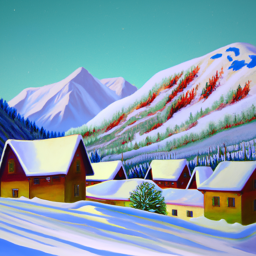
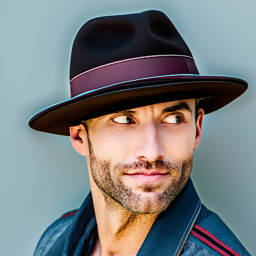
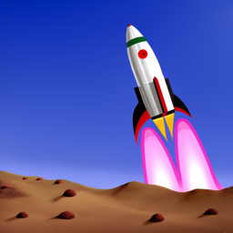
In this project, we used diffusion models to generate images. The initial task was to run a pre-existing model using three pre-defined prompts. Using the values, 60 and 180 for the number of inference steps, the following outputs were produced:
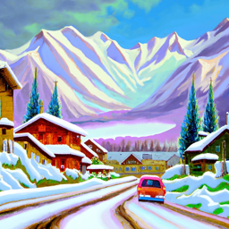
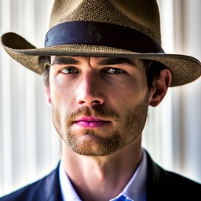
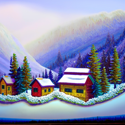
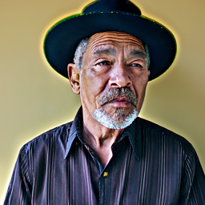
Implementing the Forward Process
I implemented my forward process using the following equation:
Then, using the provided image of the campanile, I ran the forward process to add noise to the image, displaying the results at steps 250, 500, and 750.
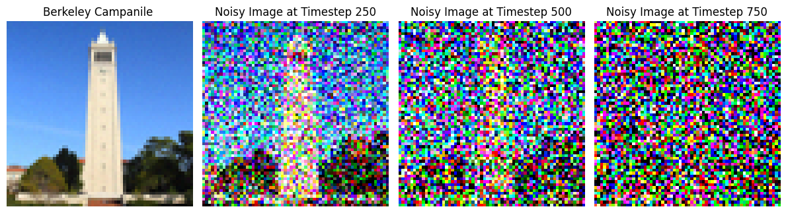
Classical Denoising
For classical denoising, I used TF.gaussian_blur to blur the image(s) after each step. While this made the image less noisy, after 750 steps, the result is quite blurry and difficult to make out what the original image actually was.
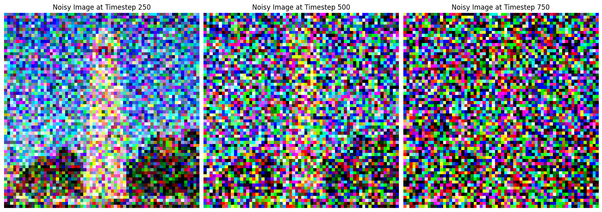
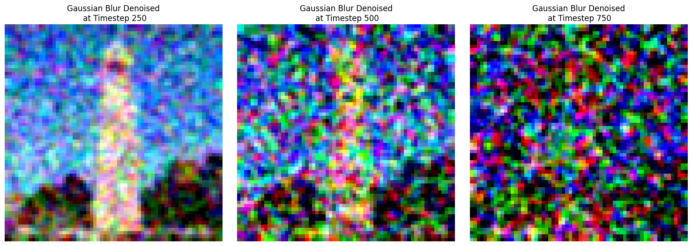
One-Step Denoising
For one-step denoising, I utilized the pre-trained UNet model, stage_1.unet, to yield the denoised image. Below are the results at 250, 500, and 750 steps.
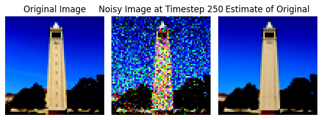
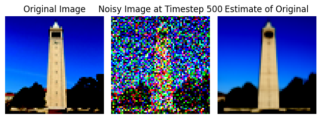
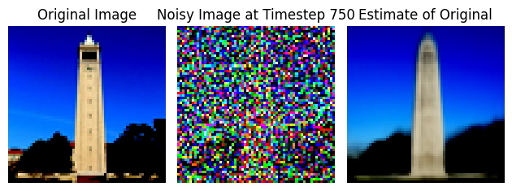
Iterative Denoising
For iterative denoising, the main difference in the approach was denoising bit by bit, going down from timestep 690, with a stride of 30. Below are some results at regular intervals.
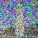
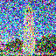
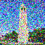
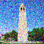
Diffusion Model Sampling
To create new images from scratch, some random noise was generated and then I used the iterative_denoise function, resulting in the following 5 images.
Classifier-Free Guidance
To improve the image quality, I used classifier-free guidance. This technique involves estimating noise conditioned on a text prompt (\(\epsilon_c\)) and an unconditional noise estimate (\( \epsilon_u\)). By applying the formula below, with (\(\gamma\)) = 7
Due to iterative denoising starung teh same, the results improve significantly. The results are not as diverse as before since the model steers towards one direction, but the quality of images dramatically increased, as shown below.
Image-to-Image Translation
In this section, I applied iterative classifier-free guidance denoising to recreate an image of the Campanile. Using the prompt "a high-quality photo" and noise levels ranging from 1 to 20, I observed that as the noise level increased, the generated images progressively resembled the original more closely
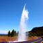

Using the same approach, here is the image-to-image translations I created utilizing images of Lionel Messi holding the FIFA World Cup trophy and a random landscape photo I found with rocks and water.
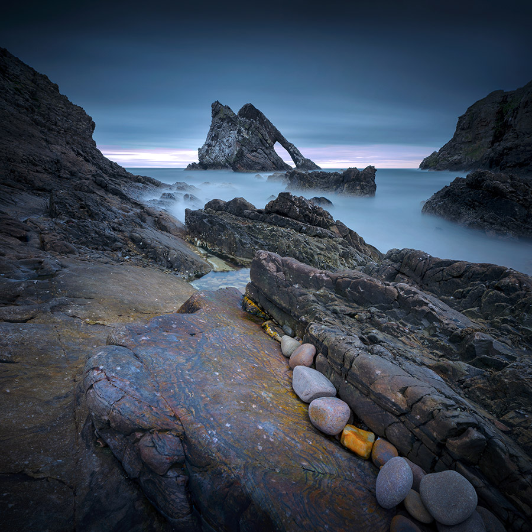
Text-Conditional Image-to-Image Translation
For this task, I followed the same denoising process as earlier but experimented with different prompts. Using "a rocket ship" as the prompt for the Campanile, the model produced the images below at various noise levels.
Similarly, using the same text prompt, I redid the same process for the Lionel Messi and Rock Landscape images.
Visual Anagrams
To create a visual anagram, I utilized the UNet model in two stages. First, I denoised the original image, and then I applied the model to denoise the flipped version of the same image. This process resulted in a unique effect where one image is visible when viewed upright, and a completely different image appears when flipped upside down. I then tried a few different pairs of prompts together to create 3 anagram images, resulting in the following:
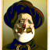
Hybrid Images
To create hybrid images, I applied a modified version of the approach from the previous task. Instead of combining a denoised image with its flipped counterpart, I merged the denoised high-frequency image with the denoised low-frequency image, similar to what we did in Project 2. This method allows the high-frequency details to stand out when viewed up close, while the low-frequency features dominate when viewed from afar. I then tried a few different pairs of prompts together to get 3 interesting hybrid images, resulting in the following:
Part B
Training a Single-Step Denoising UNet
Implenting the UNet
To implement my own diffusion model, I began by implementing the various classes of options needed for basic building blocks, as outlined in the below diagram.

Key Components:
- Conv: A convolutional layer that changes the channel dimension but keeps the resolution.
- DownConv: A convolutional layer that downsamples the image by a factor of 2.
- UpConv: A convolutional layer that upsamples the image by a factor of 2.
- Flatten: Compresses a 7x7 tensor into a 1x1 tensor using average pooling.
- Unflatten: Converts a 1x1 tensor back into a 7x7 tensor.
- Concat: Combines tensors with the same 2D shape along the channel dimension.
- ConvBlock: Similar to Conv, but includes an additional convolutional layer.
- DownBlock: Combines DownConv with a ConvBlock for additional functionality.
- UpBlock: Combines UpConv with a ConvBlock for additional functionality.
Using the UNet to Train a Denoiser
The next step was to train, using MNIST. First, I added noise to the images, which is iteratively added and plotted below.
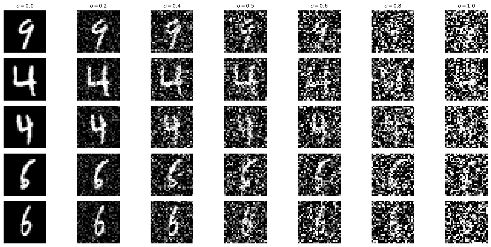
I trained the model for 5 epochs with a batch size of 256, setting the noise level to 0.5 and the number of hidden dimensions to 128. The training utilized L2 loss (MSE) and the Adam optimizer with a learning rate of 1e-4. After the final epoch, the model achieved a loss of just 0.0090. Below are the examples of the model's inputs, the corresponding noised images, and the denoised outputs generated by the model. These plots compare the results from the epoch 1 to epoch 5. It is evident that the outputs become much clearer and more closely resemble the input images after the last epoch, demonstrating the model's improved performance over time.
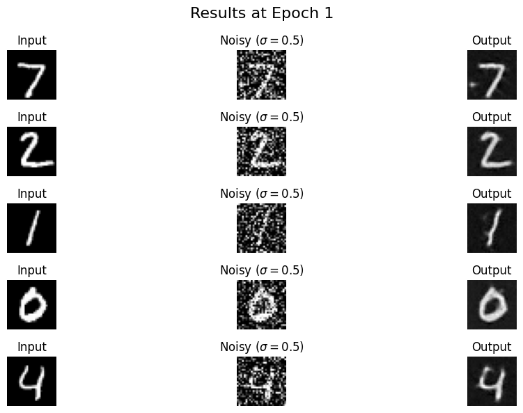
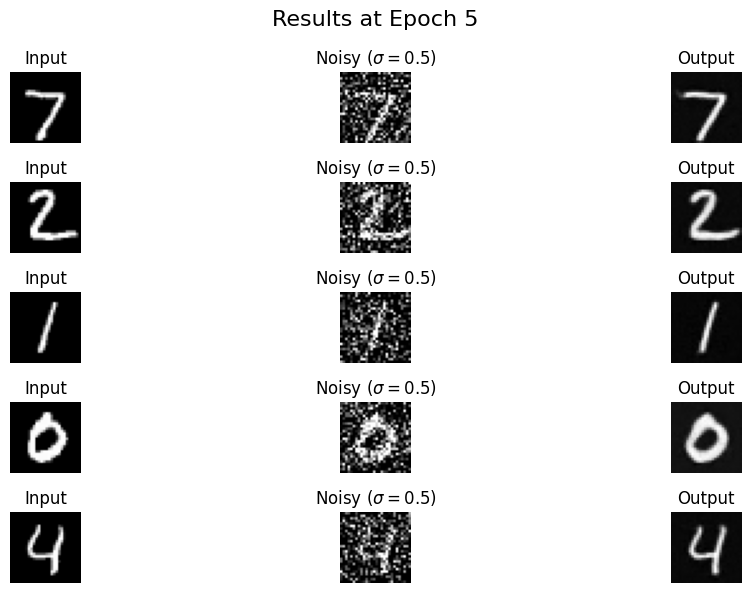
Below is a graph of the loss vs number of steps. The steady decrease and slow convergence is visible as the model improves with each step.
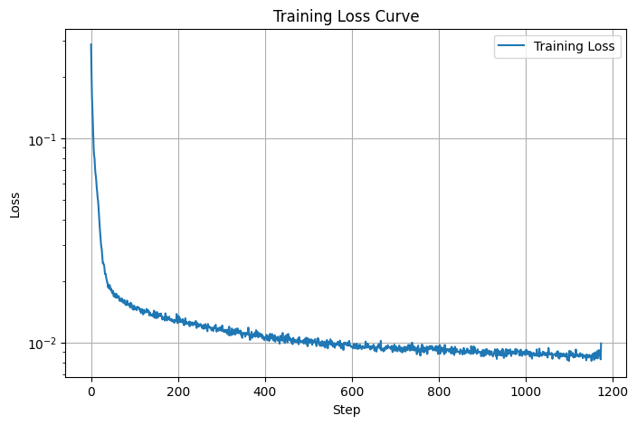
After training the model on a noise level of 0.5, I tested its ability to denoise images with varying noise levels: [0.0, 0.2, 0.4, 0.5, 0.6, 0.8, 1.0]. Below are plots showing the noisy input images and the corresponding outputs generated by the model.
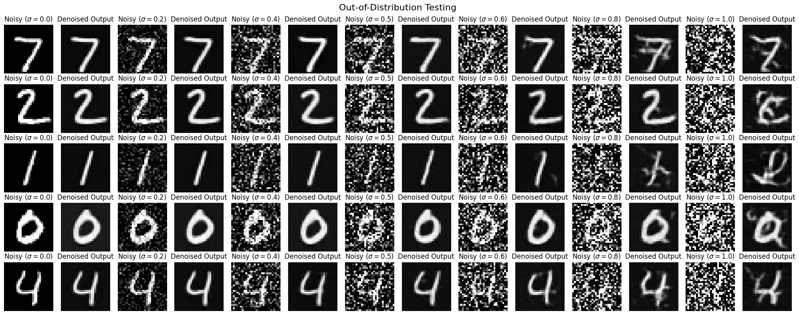
The model performs well on images with low noise levels, successfully restoring them. However, as the noise level increases to 0.8 or 1.0, the outputs begin to show noticeable artifacts, and the reconstructed images become less accurate, causing the numbers to lose clarity. This demonstrates the model's struggle to handle noise levels beyond its training range.
Training a Diffusion Model
In the second section of Part B of this project, I trained the diffusion model, beginning with implementing the time-conditioning for the UNet. This allows the model to accept variably noised images and figure out how to denoise them. Below is the plot of the training loss of the model, as well as the results after 5 epochs and 20 epochs respectively. Here we can see visible improvment with more time.
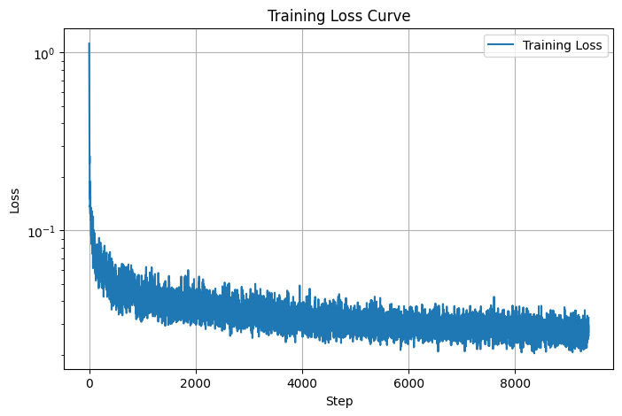
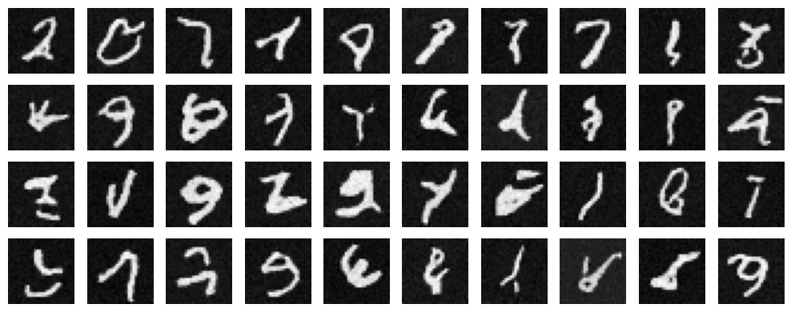
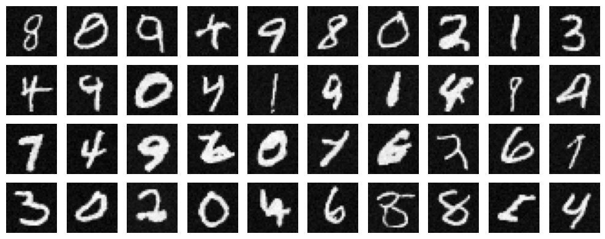
For the next part of the project, I implemented a Class-Conditioned UNet, enabling the model to generate images conditioned on the specific digit class. This was achieved by adding two fully connected layers to the UNet, which take a one-hot encoded class label c, as input. To ensure the model could still function without conditioning, I incorporated a 10% dropout on the class conditioning. Below is the plot of the loss progression over the training steps across 20 epochs, showcasing how the model's performance improved over time.
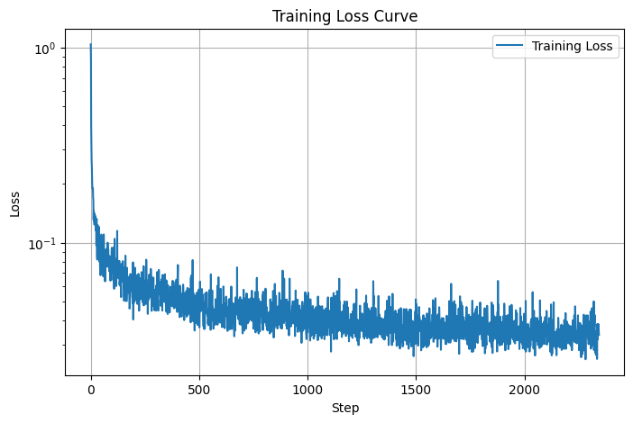
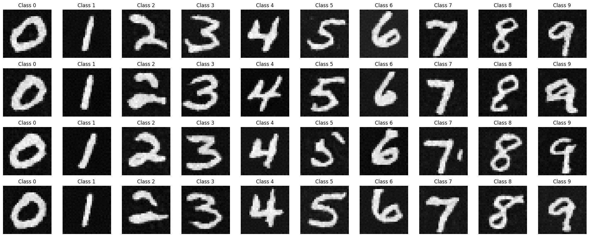
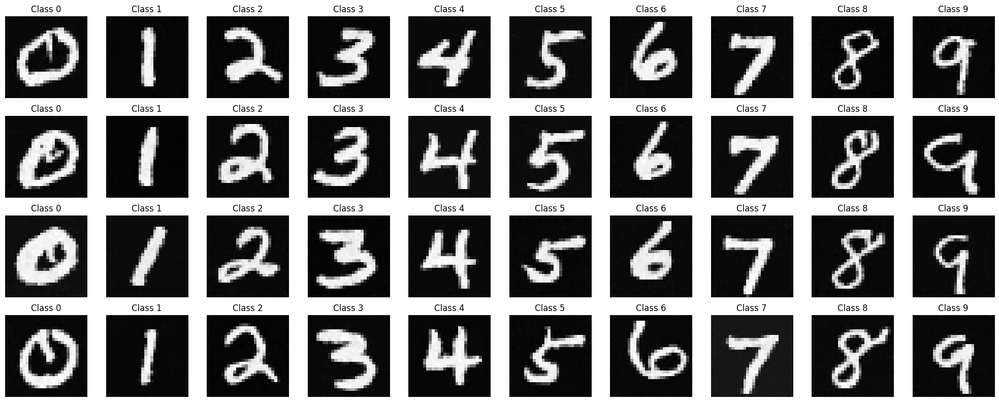
Acknowledgements
This project is a course project for CS 180 at UC Berkeley. Part of the starter code is provided by course staff. This website template is referenced from Bill Zheng.